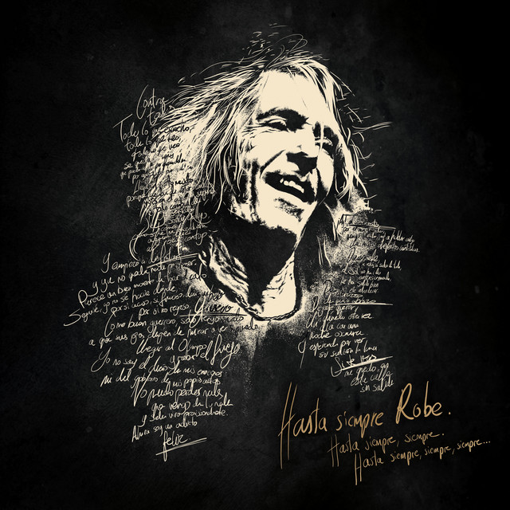
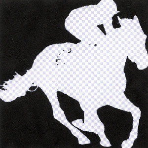
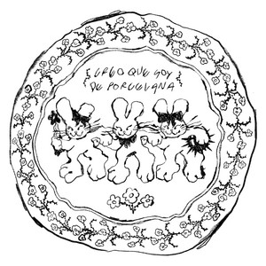
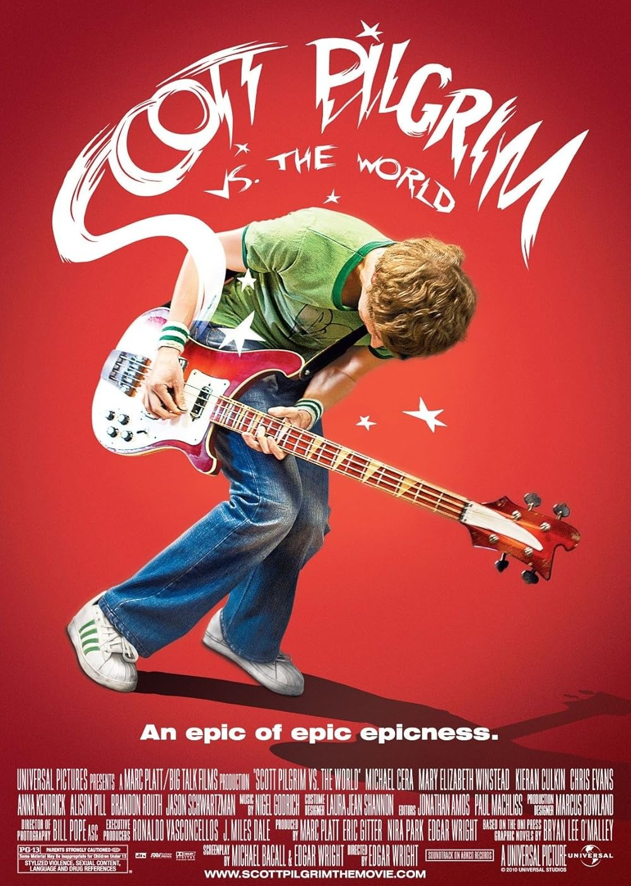
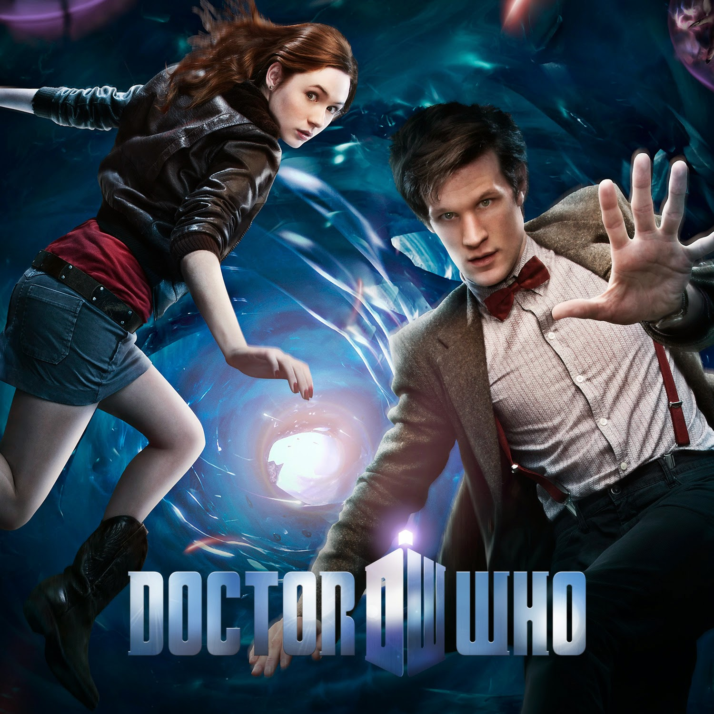
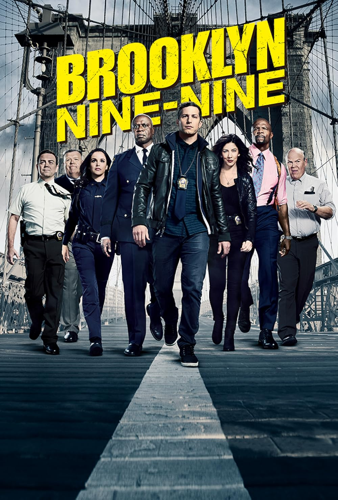
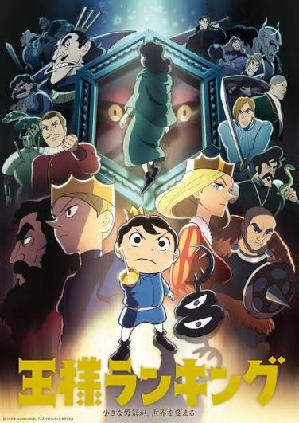
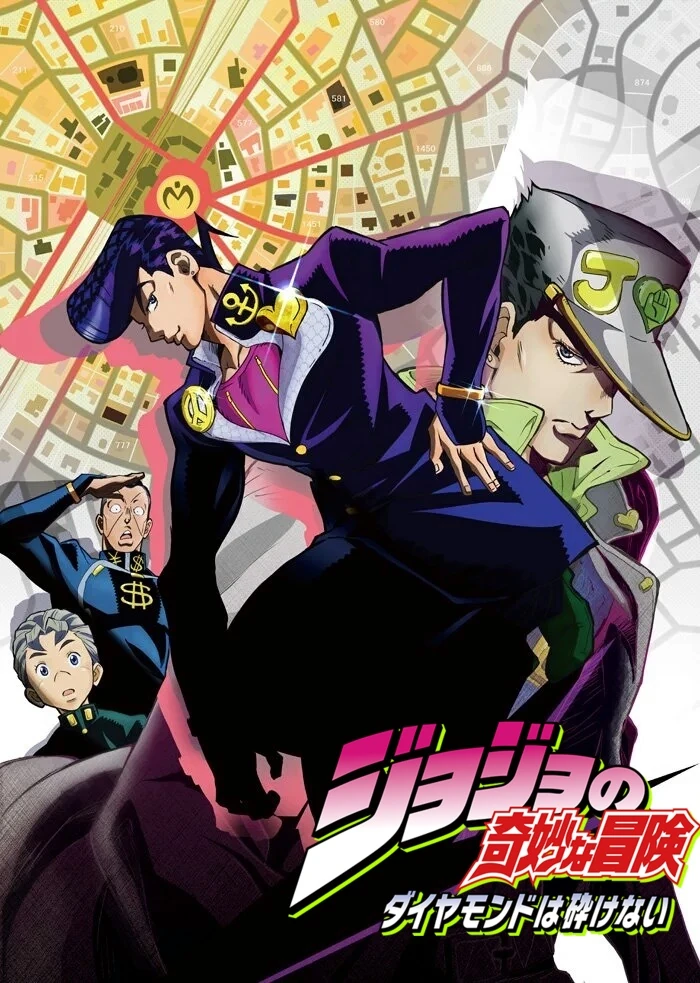

Intereses
Música

Robe
Uno de los artistas a los que vuelvo cuando me apetece escuchar música con calma y prestar atención a las letras.

Gavina.mp3
Gavina.mp3 también tiene un hueco entre mis gustos musicales y en la música que me acompaña en el día a día.

Las Petunias
Otro de los nombres que me gusta escuchar y compartir cuando hablamos de recomendaciones musicales.
Películas

Spider-Man: Into the Spider-Verse
Me llama la atención su estilo visual y la manera en que lleva la energía del cómic a la animación.

Scott Pilgrim vs. the World
Disfruto de su mezcla de humor, música y referencias a los videojuegos, con una personalidad visual muy marcada.
Series

Doctor Who
Me gusta dejarme llevar por sus aventuras y por la posibilidad de encontrar algo distinto en cada viaje.

Brooklyn Nine-Nine
Una comedia a la que recurrir para desconectar, reírme y pasar un rato con sus personajes.
Animanga

Ousama Ranking
Me atraen su sensibilidad y su manera de contar una aventura que invita a conectar con los personajes.

JoJo's Bizarre Adventure
Me divierten su imaginación, sus situaciones extravagantes y ese estilo tan particular que lo hace reconocible.